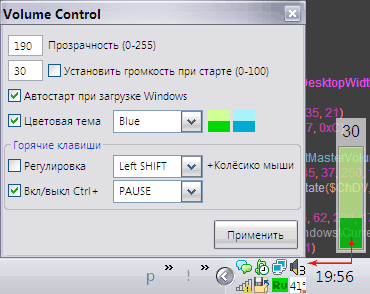

VolCon
Назначение
Регулировка звука колесом мыши удерживая Shift (WinXP).

Взаимосвязанные
VolCon
Volume Control - утилита для регулировки звука клавишами Shift + колёсико мыши.
При этом меняется иконка в трее и появляется индикатор регулировки
автор AZJIO 23.09.2010
Только для WindowsXP
Аналоги программ: LouderIt и "Power Mixer"